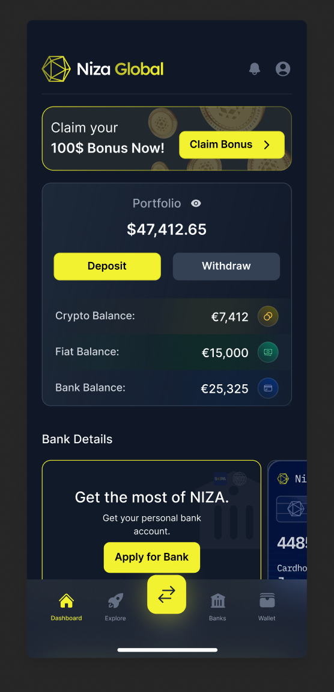
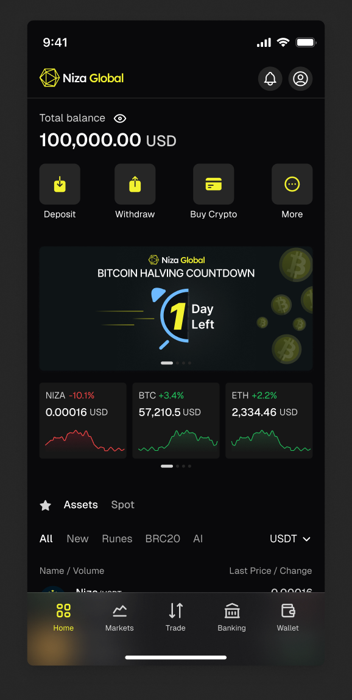
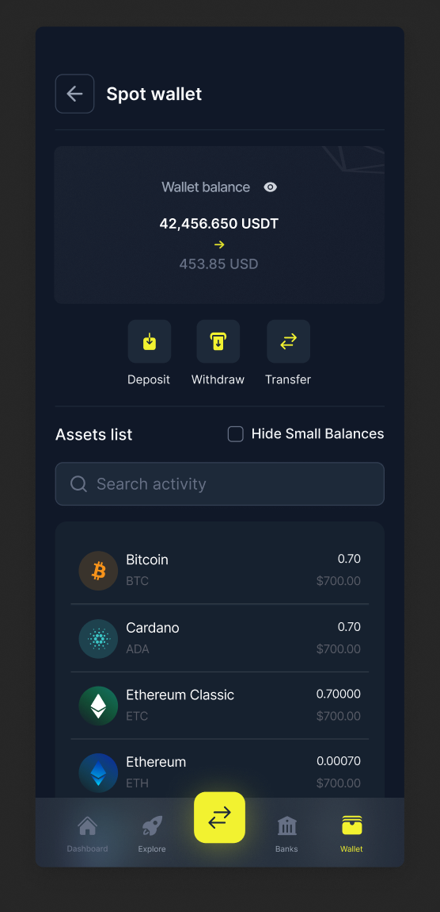

Niza Global
Design Lead
A digital platform that combines cryptocurrency exchange services with online banking. It supports multiple currencies and secure, scalable digital-asset trading, plus its own coin, NIZA, built on Ethereum for transactions inside the platform.

Deliverables
Summary
I led a team of 3 designers redesigning Niza Global’s web and mobile apps: dashboard, wallet, banking, buying crypto, and deposits and withdrawals. The result was a clearer experience where buying and selling crypto became much easier, and trading faster.
Leading a team I had never met
A few weeks in, I was asked to manage the design team. I had never managed before, and I had never met any of them in person.
Morale was low, and for good reason: the team had no clear picture of what they were building, no design system and no structure to work within.
For the first two months I focused on giving the team structure: a clear direction for the product, an organized design workflow, the foundations of a design system, and one-on-one mentoring. As confidence came back, I moved to growing skills through regular feedback, especially for our junior designer. By the end we were working as one team, toward one product.
The mobile app
Most users relied on the app for day-to-day trading: monitoring prices, executing trades and managing portfolios. The previous design made these essential tasks confusing. Users got stuck executing trades, checking balances or tracking assets because of unclear navigation and overly complex workflows.
I led a redesign focused on what traders do most. Through user research and iterative prototypes we simplified navigation, rebuilt the home screen around balance and quick actions (deposit, withdraw, buy), and streamlined placing orders, managing watchlists and reviewing history. Buying and selling crypto became much easier, and trading faster.



